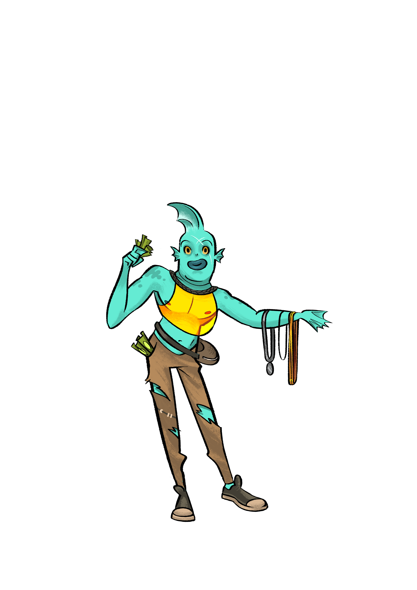
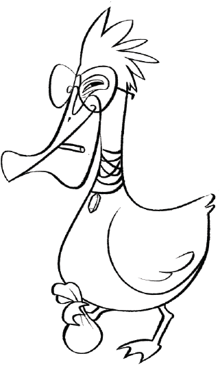

O Vírus é uma carta automática, logo, caso algum jogador seja eliminado por sua ação, ninguém ganha uma moeda.
É ativado pela ação do Sequestrador.
Caso tenha o Duas Caras e o Vírus em sua mão e ambas forem ativadas, o Duas Caras tem preferencia.
O Vírus não é ativado quando puxado da pilha de compras, de um Campo ou do Descarte. E também não é ativado quando colocado em um Campo ou Reserva (que faz parte do Campo).
Caso o Vírus seja bloqueado pelo Ditador, não deve ser ativado.
Caso algum jogador tenha o Vírus em mãos após a ação do Arruaceiro. Ativa a Epidemia.
Caso algum jogador tenha o Vírus em mãos após a ação do Eleições. Ativa a Epidemia.
Caso puxe o Vírus na ação do Agiota, termine a ação de comparação normalmente, depois execute a ação do Vírus.
Caso puxe o Vírus na ação da Manipuladora, execute a ação do Vírus.
Colocar o Vírus na Reserva de outro jogador não faz com que ele seja ativado.
Modo Duo:
Jogando em dupla, caso sua dupla ative o Vírus que está em sua mão, a ação acontece normalemnte.
Modo Limite:
Caso não hajam cartas na pilha de compras para repor o Vírus, você perde uma carta.
Regras Opicionais:
Todos os participantes da ação da carta que ativou o Vírus devem descartar as cartas da mão e comprar uma carta a menos. Menos quem entregou o Vírus.
Caso pegue o Vírus da mão de um jogador durante a ação de um Cambista, ativa o Contágio.
Caso puxe o Vírus da mão de um jogador durante a ação do Traficante Avançado, ativa o Contágio, se tiver pego a segunda carta de outro jogador, mesmo que seja do Campo, ele participa do Contágio.
 